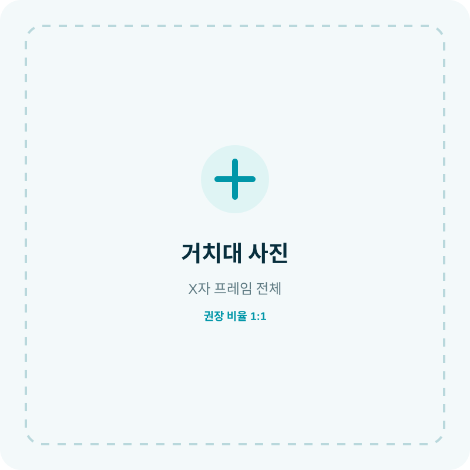
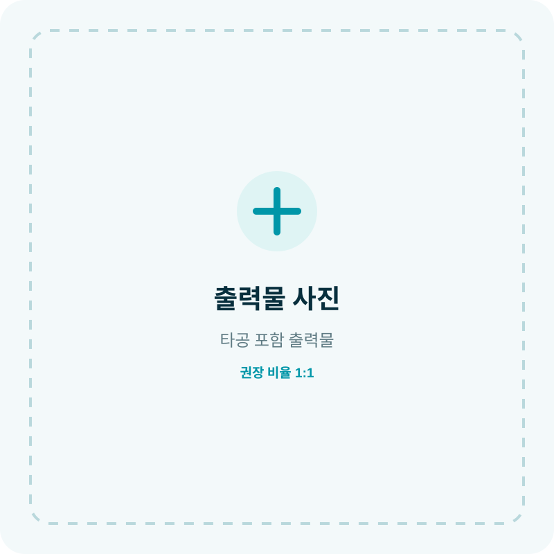
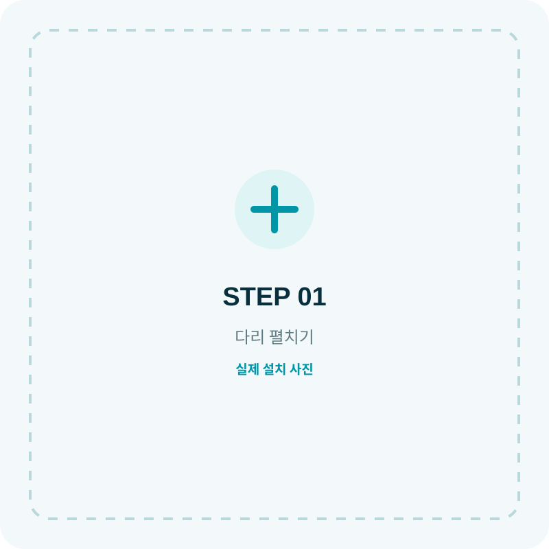
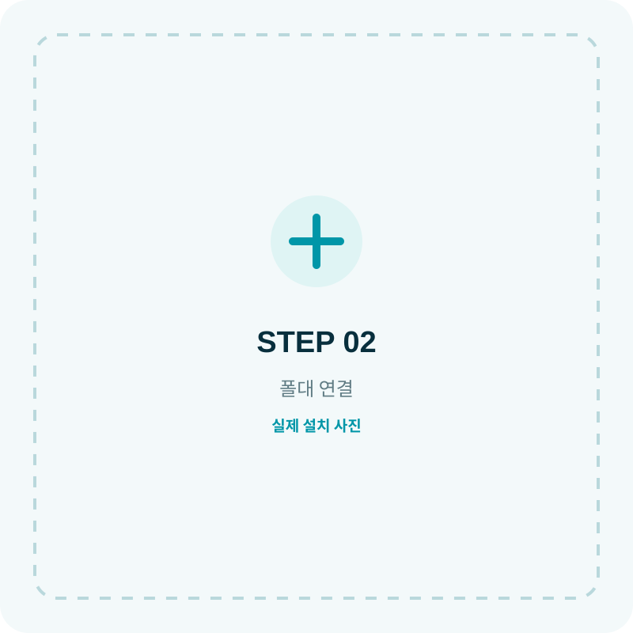
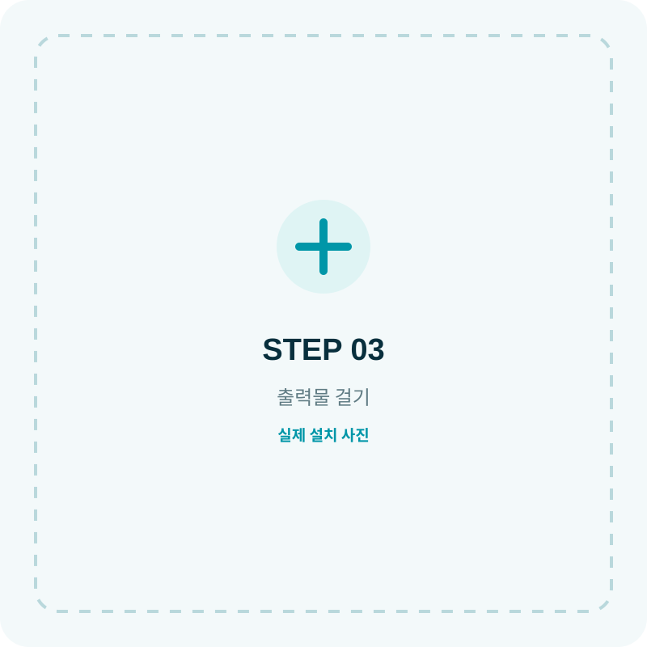
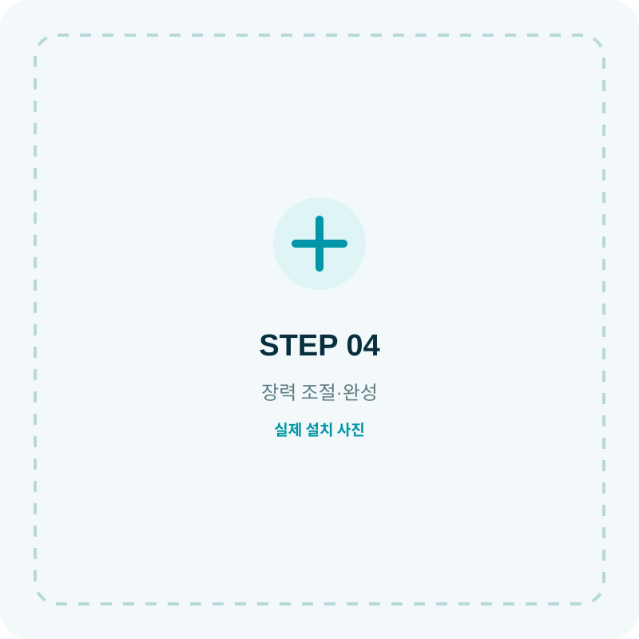
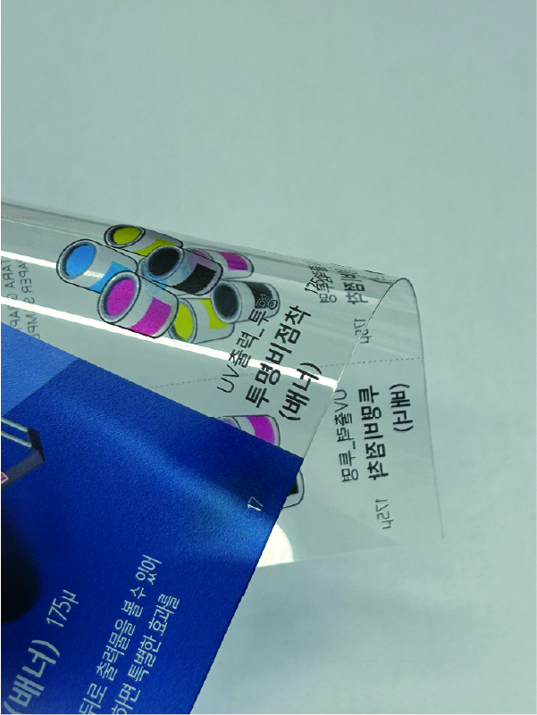
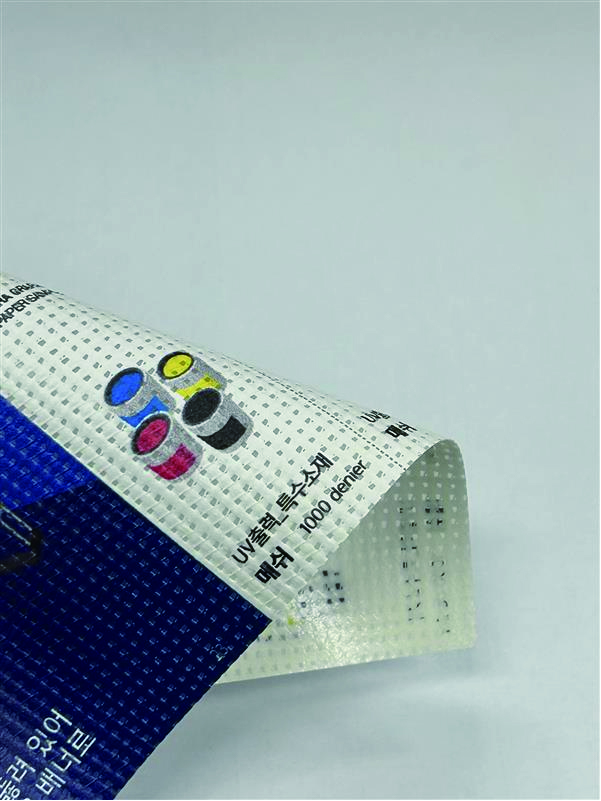
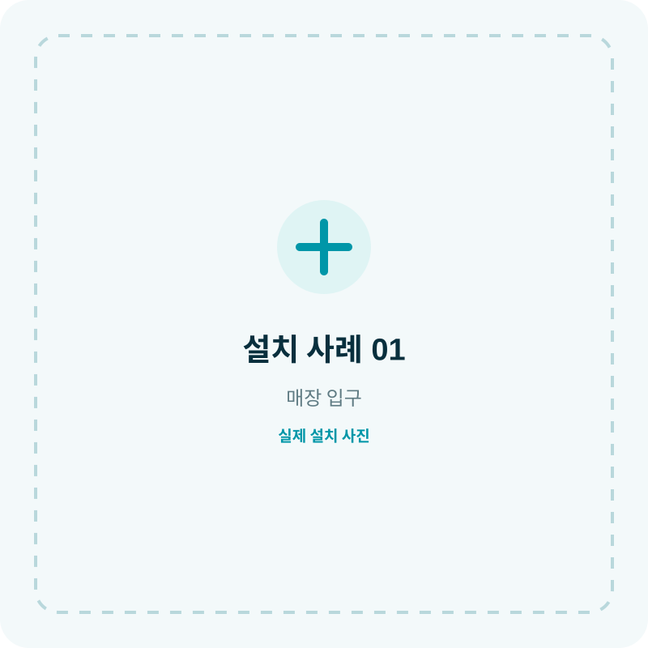
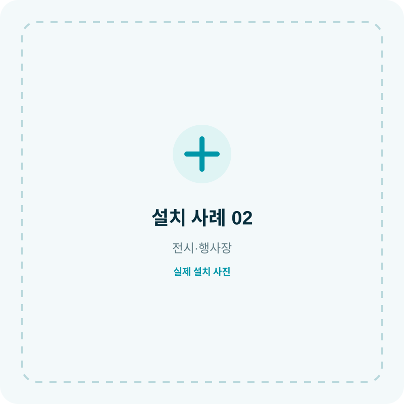

빠른 설치
다리를 펼치고 출력물을 네 모서리에 걸면 설치가 끝납니다.
 실제 제품 이미지
실제 제품 이미지
TARA X-BANNER
매장 입구, 행사장, 학교, 기관 안내에 폭넓게 사용하는 실내용 X배너입니다. 간단한 구조로 이동과 설치가 편리하며 출력물 교체만으로 반복 활용할 수 있습니다.
WHY X-BANNER
X자 구조가 출력물 네 모서리를 잡아주어 팽팽하고 안정적으로 보여줍니다.
다리를 펼치고 출력물을 네 모서리에 걸면 설치가 끝납니다.
행사장과 매장 사이를 이동하거나 보관하기에 부담이 적습니다.
프로모션이 바뀌면 출력물만 새로 제작해 거치대를 다시 사용합니다.
메뉴, 행사, 방향, 채용, 캠페인 등 다양한 안내에 사용할 수 있습니다.
SIZE GUIDE
매장과 행사장에는 800mm 폭을 추천합니다. 메시지 양과 설치 공간에 맞춰 깔끔하게 배치할 수 있습니다.
COMPONENTS
아래 이미지 영역은 실제 촬영 사진으로 교체할 수 있도록 준비했습니다.

출력물 네 모서리를 안정적으로 잡아주는 기본 프레임입니다.

모서리 타공 또는 전용 마감으로 거치대에 고정합니다.
제품 구성에 포함되는 경우 이동과 보관이 편리합니다.
INSTALLATION
실제 설치 사진을 제공하면 아래 영역에 그대로 적용할 수 있습니다.

거치대 다리를 바닥에 안정적으로 펼칩니다.

중앙 폴대를 연결하고 높이를 맞춥니다.

출력물 네 모서리를 거치대 끝에 순서대로 연결합니다.

출력물이 팽팽하고 수평인지 확인하면 완료입니다.
MATERIAL
반사가 적고 가독성이 좋아 정보가 많은 디자인에 적합합니다.

FILM빛을 통과시키는 투명 소재로 유리면 연출과 특수 디스플레이에 활용합니다.

MESH미세한 망 구조로 가볍고 통기성이 있어 특정 실사출력 용도에 활용합니다.
USE CASE


FILE GUIDE
FAQ
보유한 거치대 규격과 타공 위치가 맞으면 출력물만 별도로 제작할 수 있습니다.
X배너는 기본적으로 실내용을 권장합니다. 바람이 강한 장소에서는 넘어질 수 있습니다.
네 모서리 연결 위치와 중앙 폴대 높이를 다시 조정해 장력을 맞춰주세요.
타라 X배너 상세페이지 시안